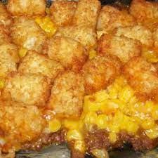

Tater Tot Casserole

Description
First things first, it's a casserole, not a hot dish. Close this page if you disagree.
This Tater Tot casserole is a quick and easy dinner that everyone will love.
Just four basic ingredients come together for this comforting dish.
If someone doesn't like tater tot casserole, run away from them and don't look back!
Ingredients
- 1 pound ground beef
- 1 (10.5 ounce) can condensed cream of mushroom soup
- salt and ground black pepper to taste
- 1 (16 ounce) package frozen tater tots
- 2 cups shredded Cheddar cheese
Steps
- Preheat the oven to 350 degrees F (175 degrees C)
- Heat a large skillet over medium-high heat
- Cook and stir ground beef in the hot skillet until completely brown
- Stir in condensed soup
- Season with salt and black pepper
- Transfer beef mixture to a baking dish and layer tater tots and cheese on top
- Bake in the oven until tater tots are golden brown, 30 to 45 minutes
- Enjoy!